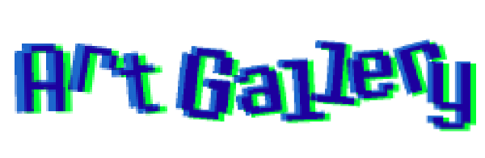

these self portraits (one that you may recognise from the homepage) were drawn digitally. They are the most recent self portrait i have done.
these self portraits i really like, as they really helped me to develop my recent art style. I'm a big fan of cartoons if you cant tell :).
since i finished my a-levels in 2020, I havent really done much traditional realism. this drawing is the first i have done in this style and medium for a long time. i think i'm a little rusty. ALSO !! THE PASSWORD IS 13579 !!

inspired by a song by miniature tigers, called giraffe. "thats what you get for sticking out your neck" "it's just another sunny day where I'm at, my head is in the clouds 'cause I'm stretching out my neck"
these drawings are of two of my favourite fuggler dolls (funny ugly monsters), which are something that i collect. I just love how creepy they are with their realistic eyes and teeth, and fabric everything else. i currently have 7.
this is the oldest piece on this page. i thought it would be nice to include and older self portrait, as well as the recnt ones, to show how my art style has developed. my personality used to be a bit different.
this is a drawing of me and my best friends and housemates. pictured from left to right: emily, izzy, me, and honey. its from when we first became friends before uni started, so we all look a bit different now.

my favourite hobby is art, specifically illustration and animation. Here are some of my favourite pieces from recent years. click each frame to learn more about them!